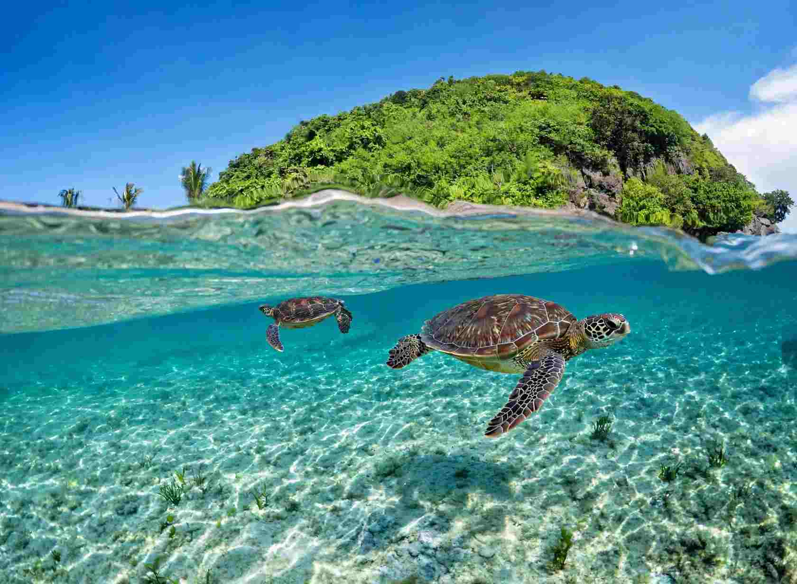

You can snorkel Apo Island in a single day from Dumaguete, and the sea turtles are the reason most people make the trip. Boats cross from Malatapay in Zamboanguita, the easiest swimming happens in shallow water just off the landing beach, and a local guide is required for the turtle area. Plan on an early start, a small shared boat and cash in your pocket, because there are no ATMs on the island.
Apo is small, roughly 72 hectares, with a village of fewer than a thousand people. Its community has protected the surrounding reef since 1982, in a programme linked to the Silliman University marine biologist Dr. Angel Alcala. Fishing is banned inside the sanctuary, and the island is often credited with more than 650 fish species and around 400 coral species. The payoff for snorkellers is simple: healthy coral you can reach without a long swim.
This guide is organised around decisions rather than a list of attractions: which spot suits your swimming confidence, how to reach the island, what the day realistically costs, and which rules the guides enforce. Fees and boat arrangements change, so treat the figures below as a planning range and confirm them on the day.

Choose Your Spot by Swimming Confidence
Turtle Point: the gentle start
Turtle Point is right off the main beach where the boats land. The water is shallow, with patches of seagrass and coral heads where green turtles feed, and many visitors see one within minutes of getting in. A licensed guide is required here. The guide keeps you in the allowed swimming lane and watches that nobody stands on coral or crowds an animal.
This is the best choice for first-timers, children and anyone who prefers to keep the shore within reach. Slip in slowly, stay flat on the surface and let the guide point out where the turtles are grazing. Go in the morning, when the sea is usually calmer and fewer boats have arrived.
The marine sanctuary: more coral, more fish
Just past the turtle area, the sanctuary opens into busier coral gardens with branching and boulder corals, parrotfish, angelfish and the occasional passing jack. The slope drops gradually, so you can stay shallow or drift a little deeper. Ask your guide where the current is running that day, since this side can carry a gentle drift.
It suits people who are already comfortable in open water and want to see more than turtles. Buoyancy matters most here: keep your fins near the surface and avoid kicking up sand over the coral.
Rock Point and Chapel: only for strong swimmers
On the eastern and northern sides, dive sites such as Rock Point and Chapel have steeper reef walls and deeper blue water. Experienced snorkellers sometimes swim them on calm days with a boat alongside, but they sit outside the standard turtle swim. Treat them as an optional second swim after Turtle Point, and only if your guide says conditions are right.
How to Get to Apo Island from Dumaguete
- Dumaguete to Malatapay. Take a Ceres bus or jeepney heading south toward Zamboanguita and get off at Malatapay. The ride takes roughly 30 to 40 minutes and typically costs about PHP 25 to 50, plus a tricycle if you start from a hotel.
- Malatapay to Apo Island. Boats run on demand with no fixed ferry timetable. A small boat for up to four people is typically PHP 3,000 to 3,500 round trip, and a larger boat for six to eight is around PHP 5,000. The crossing takes 30 to 45 minutes depending on the sea.
- Getting back. Boats generally stop leaving the island between 2 PM and 4 PM, earlier if the waves pick up. Arrive at the wharf before 9 AM so a late start does not eat into your swim.
Some operators also run boats from Dauin, and resorts in Dauin and Dumaguete sell day tours that bundle van, boat, guide, gear and lunch. Shared tours usually start around PHP 2,000 to 3,000 per person. If you are coming from Siquijor, take the ferry to Dumaguete first and follow the same route.
What a Day at Apo Island Costs
The usual charges, which fund reef monitoring and community programmes, are:
- Island entrance or environmental fee: about PHP 100 for Filipino visitors and PHP 300 for foreign visitors. Young children are often free.
- Snorkelling guide: about PHP 300 per group of up to four for the day, required for Turtle Point.
- Gear rental: around PHP 100 each for a mask and snorkel and for a life vest, or PHP 200 to 300 for a set that includes fins.
- Boat: PHP 3,000 to 5,000 round trip, split among passengers.
As a rough estimate, four people sharing a small boat and renting a basic set should expect to spend somewhere between PHP 1,300 and 1,500 each, including the bus and the guide share, before food. That is a planning figure built from the rates above, not a quote. Check the board at the Malatapay tourism desk and the registration hut on the island, because posted rates can be adjusted. For a wider look at spending in the area, see our 3-day Dumaguete budget breakdown.
A Simple One-Day Plan
Leave Dumaguete by about 6:30 or 7 AM so you reach Malatapay before 9. Cross, register, pay the fees and meet your guide, then do Turtle Point first while the water is calm. Have an unhurried lunch, then decide with your guide whether the sanctuary side is worth a second swim. Keep the boatman informed so you can leave early if the sea turns choppy, and plan to be heading back by early afternoon.
Pack snacks and at least a litre of water, since shops on the island are limited. If you want a slower trip with time on land, such as the short walks to the lighthouse and a viewpoint, stay overnight in a basic homestay instead of rushing the return boat.
When to Go, and What Can Go Wrong
Water clarity is usually best in the drier months, and mornings are better than afternoons on almost any day. The cooler months, roughly November to February, can bring rougher crossings, so keep your schedule flexible and have a spare day if you can. Boats do get held back when the sea is unsafe, and that is a decision to respect rather than argue with.
Be realistic about the island itself. It is small and low-key, with basic accommodation, limited shops and cash-only payments. Walking is the only way around. Those limits are part of why the reef has stayed in good shape, but they matter if you are planning around comfort.
Reef Rules the Guides Enforce
- Do not touch, chase or block turtles, and keep several metres away.
- Do not stand on coral or take anything from the seabed.
- No fishing or spearfishing gear in the sanctuary.
- Wear a rash guard or use reef-safe sunscreen.
- Take your rubbish back to the mainland and skip single-use plastics.
- Stay inside the guide's swimming lane and the buoy line.
These are not photo-etiquette suggestions. Guides can cut a swim short if the rules are ignored, and the turtles stay relaxed enough to approach because visitors follow them.
Gear That Makes a Difference
A mask that seals properly does more for your day than any camera. Rental masks often fit poorly, so bring your own if you can, or test the seal before you leave the shop. A long-sleeve rash guard protects you from sun better than sunscreen alone, and light reef shoes help on the rocky entry. Float flat, look down and use slow kicks; if you tire, tell your guide and roll onto your back.
Is Apo Island Snorkelling Worth It?
For an easy, reliable turtle encounter over genuinely healthy coral, it is hard to beat from Dumaguete, and the shallow start suits beginners better than most reef trips. Go early, share a small boat, hire the guide, swim Turtle Point first and take the rest of the day as the sea allows.
If you are deciding how Apo fits into a longer stay, our guide to five places near Dumaguete worth the drive shows what else is within reach, and the Negros Oriental weekend getaways by budget can help you build a trip around it.